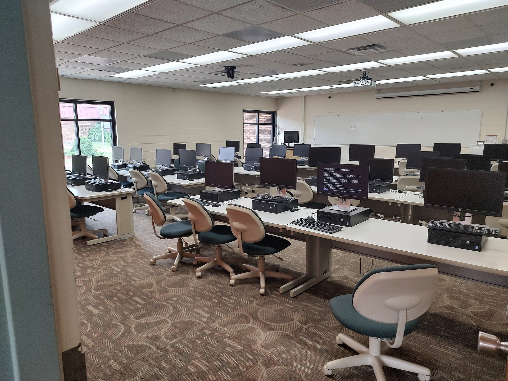
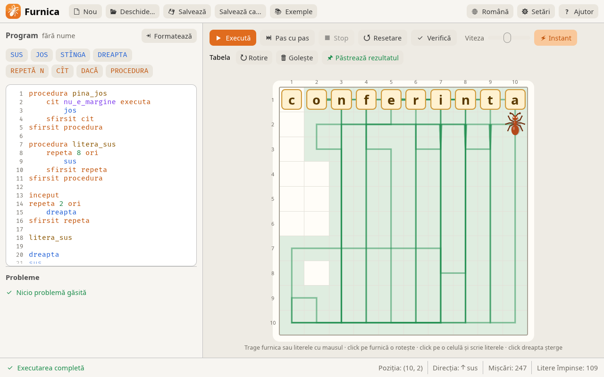
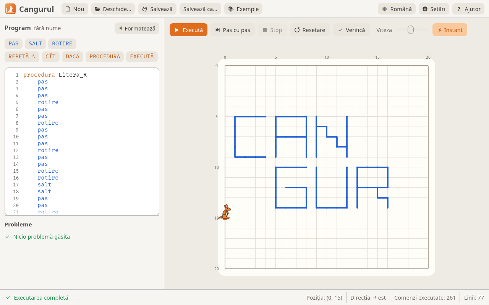
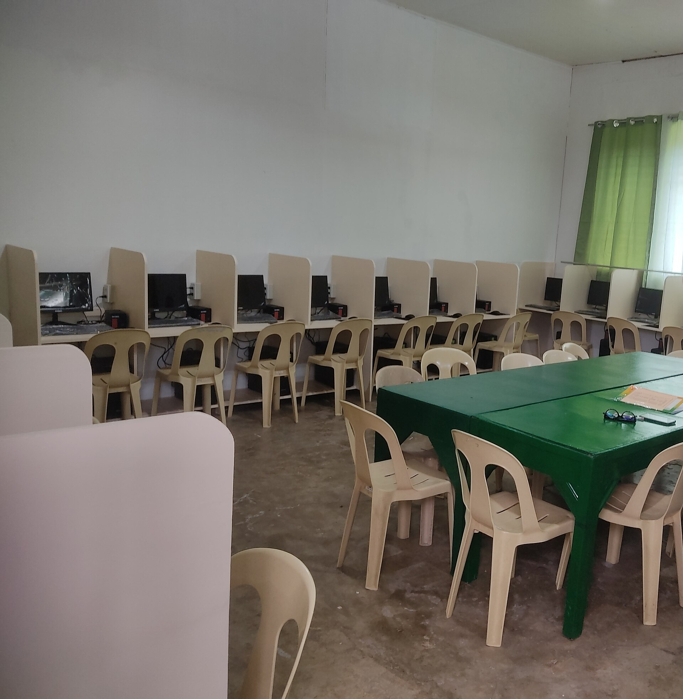

One stick.
Any computer.
The program runs from a USB stick, lists the programs with checkboxes and installs them one by one, with no windows and no “Next”. On Windows 8–11 and on Linux.
Free and open source (GPL-3.0) · no internet needed · Furnica and Cangurul included
jurnal\PC07-20261027-091402.txt
09:14:02 Windows 10 · 64 biți · AdministratorThe program itself speaks Romanian; the demos show its real interface.
How you use it
Prepare the stick once. After that, each computer takes one click.
First, unzip the archive onto a stick. Next to the program sits a Windows (or Linux) folder with one folder per program: its installer and a short program.toml file that says which version it is and how to install it silently.
At each computer, start Instalator.exe; Windows asks for administrator rights once. On Linux, type sh /media/…/instalator.sh in a terminal and enter the password once. The drive letter doesn't matter.

On screen, you see what's missing and what's out of date. The program reads the installed version (from the registry on Windows, from dpkg on Linux) and compares it with the one on the stick: missing and outdated programs are already ticked, up-to-date ones are not.
Press “Instalează” and move on to the next computer. When you come back you see, next to each program, whether it succeeded, plus a summary. A log named after the computer stays on the stick.
09:14:02 Windows 10 · 64 biți · Administrator
09:14:02 Furnica: dezarhivare E:\Windows\Furnica\furnica-3.0.5-windows7-x86-portable.zip → C:\Program Files\Furnica
09:14:09 Furnica: Ok
09:14:09 Cangurul: dezarhivare E:\Windows\Cangurul\cangurul-3.0.6-windows7-x86-portable.zip → C:\Program Files\Cangurul
09:14:15 Cangurul: Ok
09:14:15 Audacity: "E:\Windows\Audacity\audacity-win-3.6.4-64bit.exe" "/VERYSILENT" "/NORESTART"
09:15:47 Audacity: OkAfterwards, the programs are in the Start menu or the applications menu, with the same version on every computer. Furnica and Cangurul, the executors for learning algorithms, come on the stick already.


Try another computer
Pick the system and what's already installed: the list changes by the same rules as in the program.
Programs other than Furnica and Cangurul are examples: put whatever you need on your stick.
For administrators
What happens on the computer when you press “Instalează”. Pick a guarantee or search.
- Nothing from the internetEverything comes from the stick: the installers, the descriptions, even the fallback OpenGL for computers without a video driver. The network isn't used at all.
- No windows, no “Next”msiexec runs with /qn /norestart, .exe installers with the silent switches from program.toml, apt-get with -y. The computer never restarts on its own.
- Stuck installers are stoppedIf an installer still waits for a click, after 30 minutes it is stopped together with the processes it started, and the queue moves on.
- One error doesn't stop the restEach program gets its own result, and an error comes with its reason (the exit code, apt's message); the others keep installing.
- Only what's missing or oldThe installed version is read from the registry (both views on 64-bit), from dpkg or from the marker left by the installer, and compared with the one on the stick.
- Other installs stay intactIf a program was put into the same folder some other way (from an .msi, say), the installer leaves it alone and tells you to uninstall it first.
- A log for every computerThe stick keeps jurnal\COMPUTERNAME-date-time.txt with the system, the commands run and the result of each. On a write-protected stick, installing works without a log.
- Open sourceWritten in Rust, GPL-3.0. The code, the descriptions and the builds are public on GitHub, with SHA256 checksums for every archive.
Nothing found. Try “log”, “internet” or “version”.
Which systems and which packages
DownloadA new program is one folder with its installer and a file like this one.
name = "Audacity"
version = "3.6.4"
category = "Multimedia"
[detect]
registry_name = "Audacity"
[[variant]]
windows = ["10"]
arch = "x64"
kind = "exe"
file = "audacity-win-3.6.4-64bit.exe"
args = ["/VERYSILENT", "/NORESTART"]
Put it on a stick
Unzip the archive onto a stick. Furnica and Cangurul are already inside; the instructions are in CITESTE.txt (in Romanian).
Version 0.1.0 · all files and SHA256